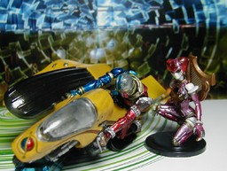

S.I.C. 匠魂 vol.4 キカイダー＋サイドマシーン＆ビジンダー
ほぼ正面から
やや上から S.I.C. 匠魂 vol.4 キカイダー＋サイドマシーンＡと同ビジンダー＋サイドマシーンＢです。下は XBOX 360 の宣伝用ダイレクトメールの箱(?)です。 背景は勝手に使ってます。このサイトのものです。→ http://dew.mg2.org/ 更新：06/01/31 初公開：2006年01月31日 17:34:06
Links:
S.I.C.: http://www.tamashii.jp/sic/ (hbm)
背景: http://dew.mg2.org/portfolio/x_pic/new_05/hard_slab_1024.jpg